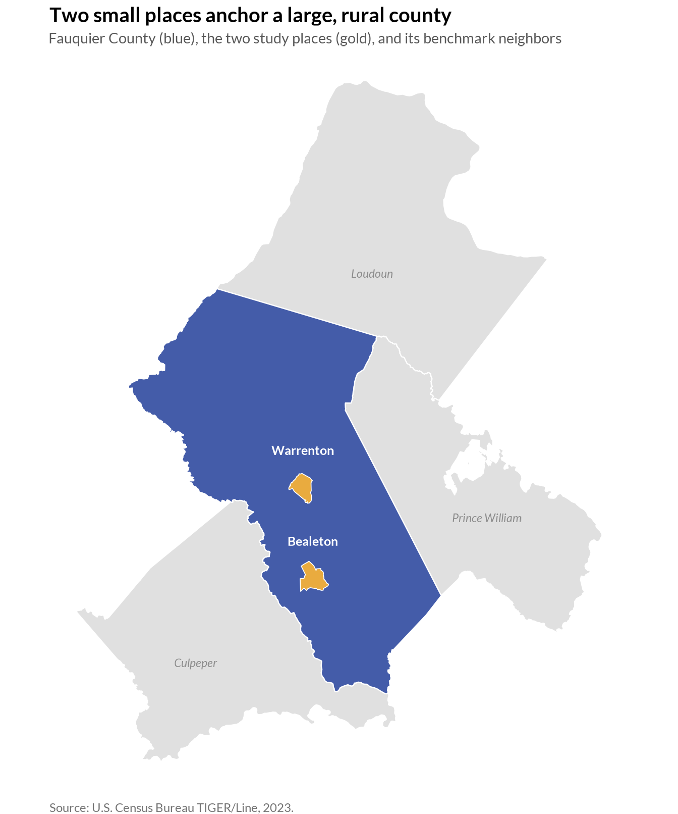
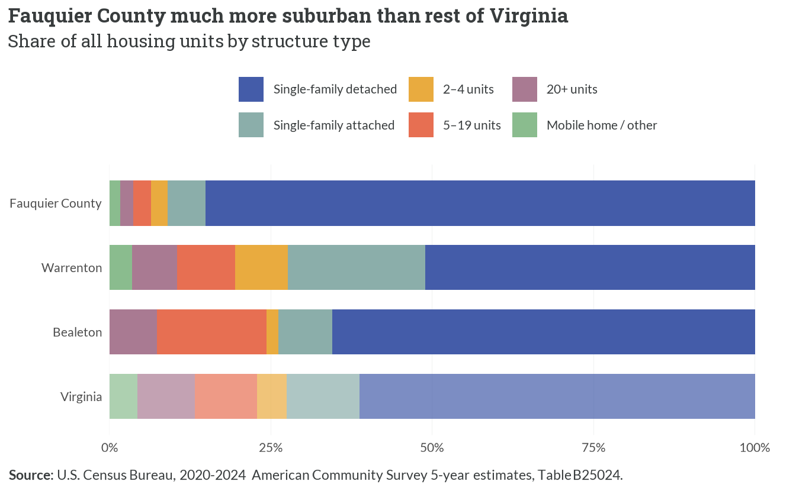
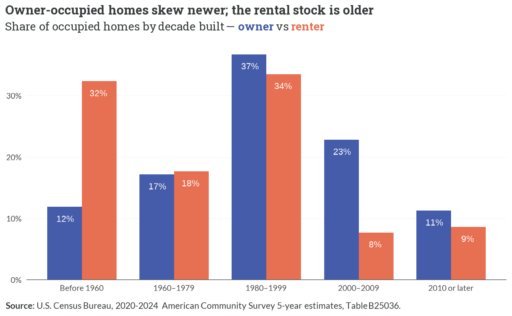
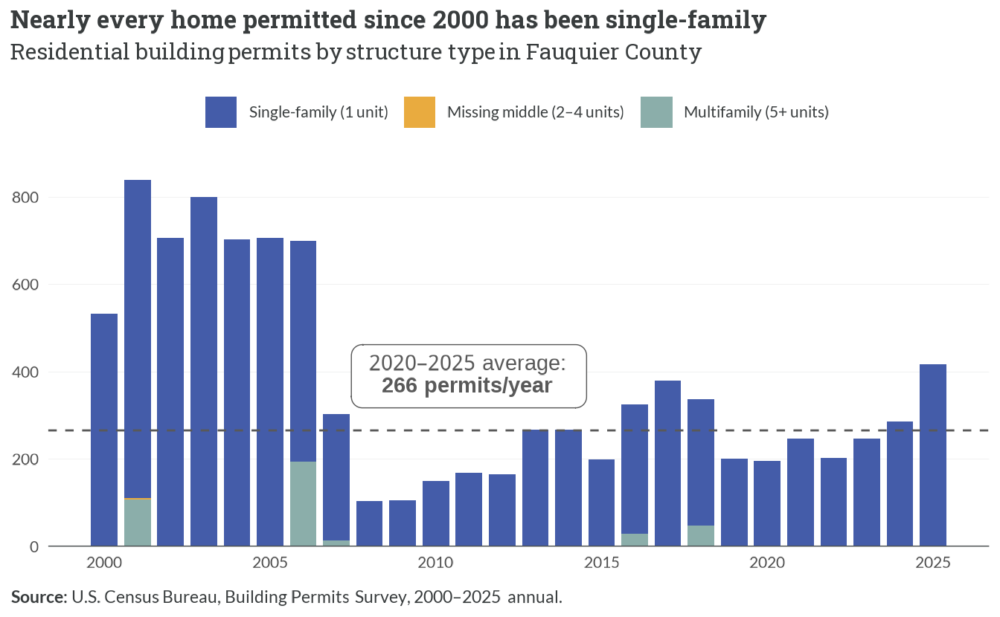
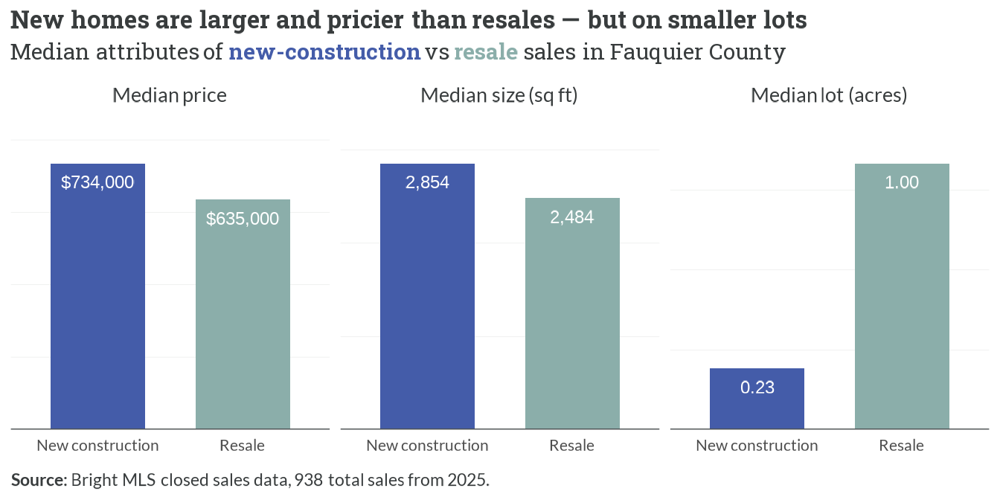

1 Current Inventory and Production Trends
1.1 Study area
Fauquier County is a large, predominantly rural jurisdiction between the Piedmont and the outer Washington, D.C. suburbs with roughly 648 square miles. This study zooms in on the county’s two population centers: the Town of Warrenton, the county seat with nearly 10,000 residents, and to the south along US-17, the unincorporated Bealeton Census Designated Place (CDP) (~5,000).
Fauquier’s Comprehensive Plan, adopted in 2019, channels growth into eight service districts, where there is public water and sewer service. Conversely, 90% of the county’s land is rural and lies outside these designated service districts, making it largely unavailable for dense development. Furthermore, “…Approximately 107,000 acres or over 25% of the county’s land area is currently in some form of conservation easement or land protection program.”1 Conservation easements alone hold about 57,500 acres of land within Fauquier.2
1 Source: Rural Land Use Plan of the Fauquier County Comprehensive Plan (Chapter 8, p. 10), 2019
2 Source: Rural Land Use Plan of the Fauquier County Comprehensive Plan (Chapter 8, p. 11), 2019
3 Source: Service District Plan of the Fauquier County Comprehensive Plan (Chapter 6, p. 3), 2018 & Amended 2026
As a result, housing and development opportunities are concentrated in limited areas of opportunity, near major transportation corridors.3 Bealeton’s service district is located in the southern part of the county, while Warrenton’s covers the center of the county. Marshall Service District covers the north end of the county, nearer to major thoroughfare Route 28. These county service districts are all surrounded by rural designated land use, as well as town-incorporated and planned service districts, like Remington to the south.
Fauquier’s Comprehensive Plan outlines that Bealeton’s Service District, and certain downtown streets of the Marshall Service District may align with an optional Urban Development Area, which would allow the county to accommodate projected growth through increased densities: at least four units per developable acre for single family, eight units/acre for townhomes, and 12 units/acre for multifamily. It is estimated that about 8,381 units of unbuilt capacity remain within the service districts and 97% of permits issued 2001–2018 were single-family detached, reinforcing the low-density pattern.4
4 Source: Fauquier County Comprehensive Plan (Ch. 1 p. 11, Ch. 3 pp. 7–11).
1.2 Housing stock composition
Single-family detached homes represent 85.1% of Fauquier’s housing stock. About 86% of all the housing stock in the Greater Piedmont region, including Rappahannock, Culpeper, Orange, and Madison counties, are also single family detached.5 This unit type in the Greater Piedmont REALTOR’s region, as well as in Fauquier alone, is far above Virginia’s overall share of single family detached homes at 61.3%. The county has proportionally little multifamily units. Five+ unit structures are only about 3% of the stock, versus roughly 18% statewide.
5 Source: Greater Piedmont REALTORS, Greater Piedmont Region Housing Gap Analysis (March 2026)
WarningDefinitions
“Single family detached” is defined as one housing unit on one parcel of land. “Single family attached” can be imagined as a townhome, but is not considered “multifamily housing,” as there is likely a property line division through the house. Multifamily is defined as a residential property with multiple units on one parcel: five or more units. Broadly, structures with two and more units are identified as “Missing Middle” housing, and could include a single family attached home like a townhouse.

Warrenton and Bealeton carry more multifamily than the county overall, with a larger share of attached and mid-size multifamily units in Warrenton than in Bealeton. Broken down by their counts rather than rates, this statistic is difficult to verify.
WarningData note: small-place estimates
With smaller places, and therefore lower populations for the ACS to precisely size multifamily and manufactured stock, there are limitations on the data available. Anything with low reliability is suppressed, affecting the reliable counts of multifamily units in Warrenton and Bealeton. Only single-family detached counts are reliable (High) in both towns.
| Structure type | Warrenton | Bealeton |
|---|---|---|
| Single-family detached | 2,096 (High) | 1,110 (High) |
| Single-family attached | 874 (Medium) | 141 (Medium) |
| 2–4 units | 335 (Medium) | — |
| 5–19 units | 368 (Medium) | 287 (Medium) |
| 20+ units | 287 (Medium) | — |
| Mobile home / other | — | — |
| Source: U.S. Census Bureau, 2020-2024 American Community Survey 5-year estimates, Table B25024. Cells with a coefficient of variation above 30% (Low reliability) are suppressed (—). High = CV ≤ 15%, Medium = CV 15–30%. |
1.3 Age of the housing stock
The county’s housing stock is aging, with an overall median year built of 1987 and 56% of all homes were built before 1990. Owned homes skew newer than this, where 34% of owned homes were built in 2000 or later, reflecting the county’s for-sale subdivision growth.
This is in contrast to the rental housing stock, which skews older with about 32% of renter-occupied homes predating 1960. Comparatively, only 12% of owner-occupied homes were built before 1960.
Warrenton’s median year built matches Fauquier (1987), but Bealeton’s stock is meaningfully newer with a median year built of 1998. This is consistent with Bealeton’s role as a recent growth node along US-17.

1.4 Tenure & Vacancies
Across ACS estimates (2013–2024), Fauquier’s owner-occupied share of units has held in the high 70s to 80%. This is remarkably stable, however, the towns diverge sharply in 2024: Bealeton is nearly 79% owner-occupied, while Warrenton is only about 63% owner-occupied, with the county’s clearest concentration of renters.
Ownership is king in Fauquier County, with a few opportunities for renting in Bealeton and Warrenton, as reflected in interviews, especially with employers who struggle to hire workers that can find or afford quality rental housing in the area. Providing context, an interviewee shared that as of April 2026, there were only three for-sale listings under $350,000. This is a signal for a heavily ownership-based market (Chapter 3).

Vacancies throughout Fauquier, Warrenton, and Bealeton reflect what interviews have shared: it is a very tight housing market. There is a strong word of mouth component to the rental (and even sales) market throughout the county, especially amongst employers and workers. Fauquier’s overall vacancy rate is about 6.6% (1,901 of 28,621 units are vacant).
Most of the county’s vacancies are not available housing though, as 550 units are considered seasonal/recreational - perhaps a short term rental - and another 883 are marked as “other vacant” or held off-market, possibly part-time country housing. Effectively, only about 1.2% of all units are actually available: 174 for rent and 178 for sale, a sign of an extremely tight market.6 This has the potential to push local workers, and renters competing for quality space, to take housing opportunities outside Fauquier.
6 Source: ACS 2020–2024, Table B25004.
When employees can afford to move to Fauquier, they tend to compete for the same rentals and sale opportunities. They also alert each other to rental openings and unit changes, as they take over each other’s leases and home shares.
1.5 Residential construction
Despite the perceived need that local workers face for units, over the last 20 years permits have overwhelmingly been for single family units. Permitting has averaged 266 units/year over 2020–2025, and is essentially all single-family. In the Greater Piedmont REALTOR’s region, about 38.7% of permits were for Fauquier County, while 50% were in Culpeper and 11.6% combined in Madison and Rappahannock.7
7 Source: Greater Piedmont REALTORS, Greater Piedmont Region Housing Gap Analysis (March 2026)
Missing middle housing, structures with two to four units, is virtually nonexistent in the study area. Just 10 total 2–4-unit permits were issued across the entire 2000–2025 period. Multifamily (5+ units) is rare and episodic, notable only in a few years. There were roughly 108 multifamily units in 2001 and only 48 in 2018.

1.6 New construction vs. resale
Of note is the difference in median home price for new construction versus resold homes, as well as lot size. Interviewees identified that where there are development opportunities, the homes seem bigger and larger than what is needed or than locals can afford.
New construction in the County sold for a higher median price in 2025 (~$734,000 vs ~$635,000 for resales) and was larger than resale homes. New construction had a median square footage of roughly 2,854 versus 370 less for resale homes.

That said, in reality, newly constructed homes sit on far smaller lots, 0.23 versus 1.0 acre for resale. New-construction lot sizes have shrunk sharply since 2022, when the median acreage was near 1.68. As unit production has concentrated in service-district subdivisions, this study assumes that lot sizes have had to decrease.
As a result, product type over lot size signals the gap in missing middle units that interviewees identified. The county’s new supply is made up of larger detached houses, with little to no starter-scale or small-lot infill product entering the market. Participants recognized this pattern as they identified gaps in the market for smaller, more manageable units, but an abundance of larger units coming available.
TipManufactured housing near Bealeton
Interviews flagged manufactured housing as a concern in the Bealeton area. ACS estimates show no manufactured home units within the CDP itself. However, Marsh Run Manufactured Home Community sits just southeast of the CDP on Route 17 and contains approximately 350 units.
No other manufactured home communities could be identified in the county. Marsh Run therefore likely accounts for most of the 470 manufactured homes the ACS estimates for Fauquier County.8
8 Source: ACS 2020–2024, Table B25024.